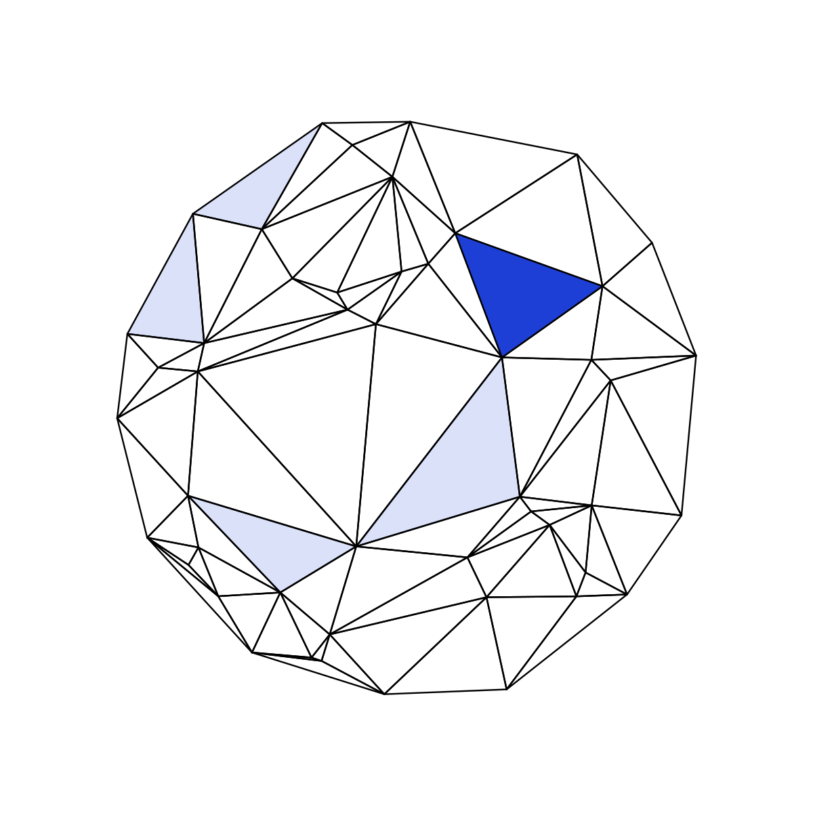
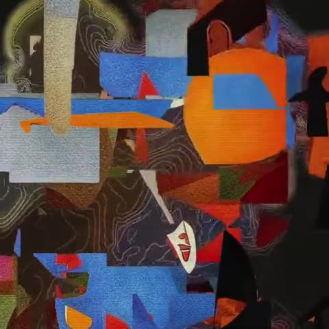
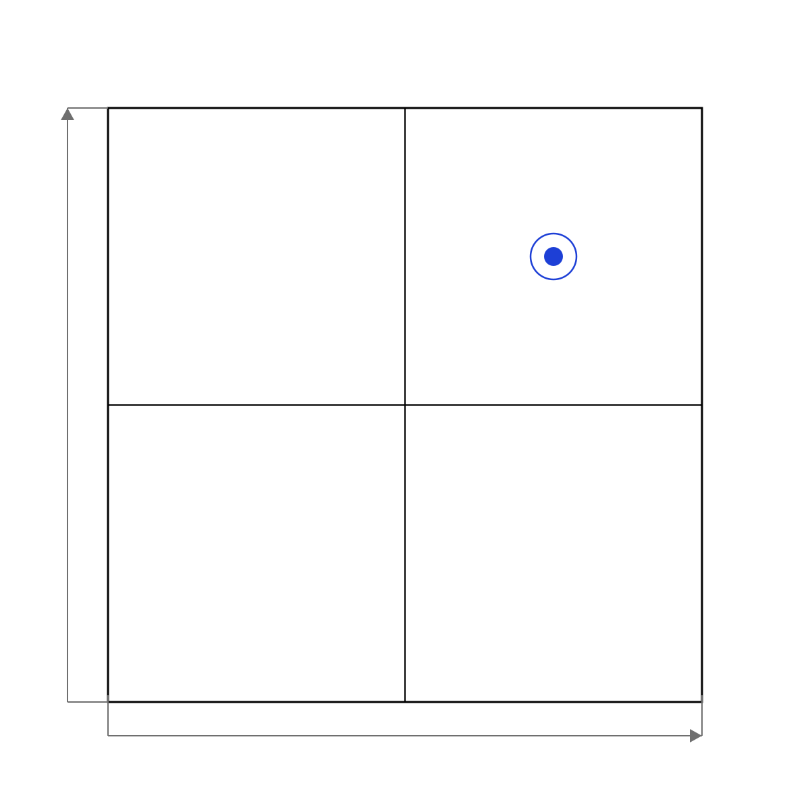
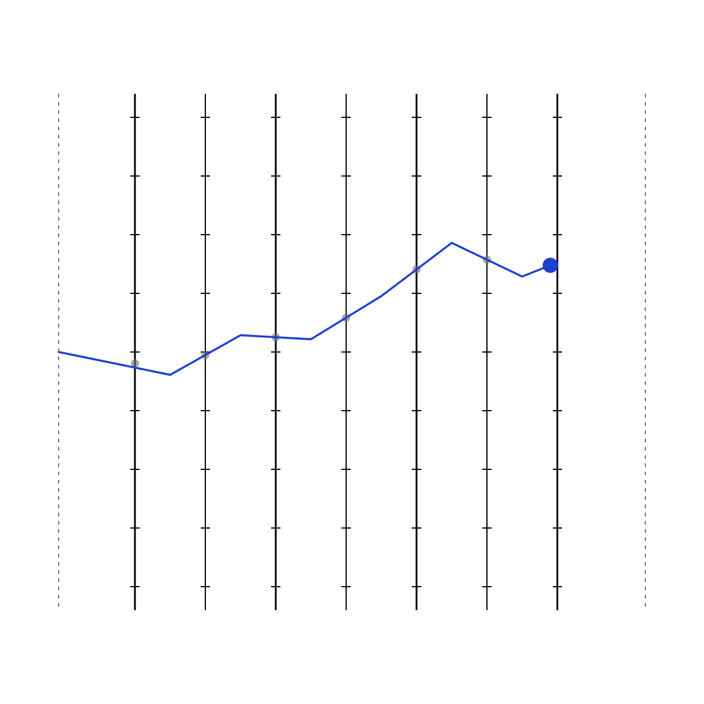
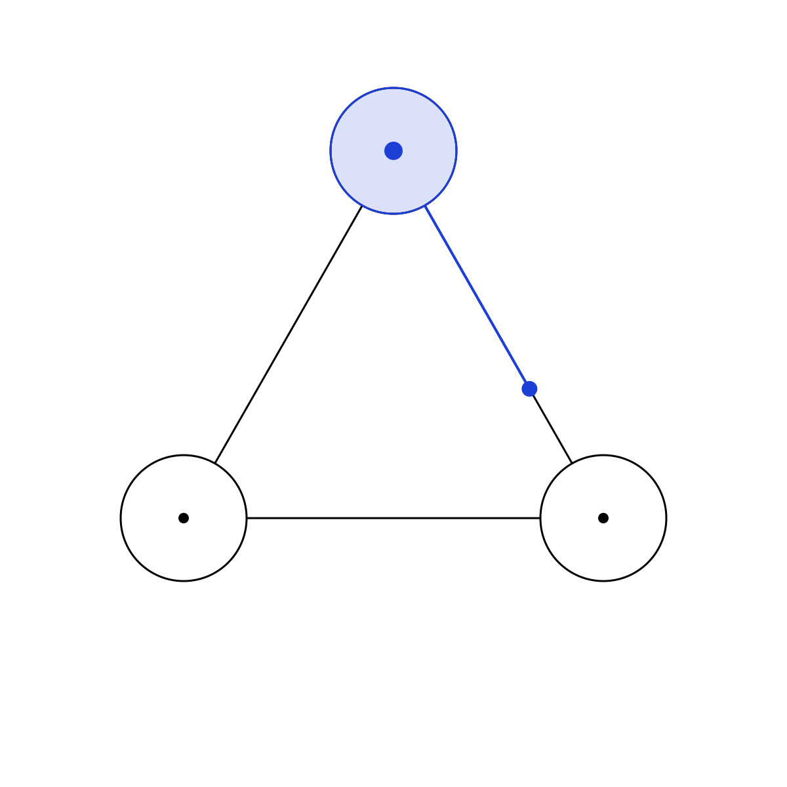
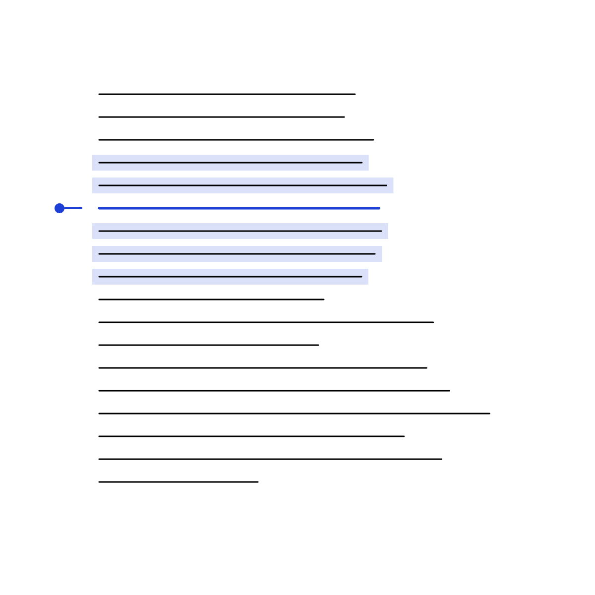
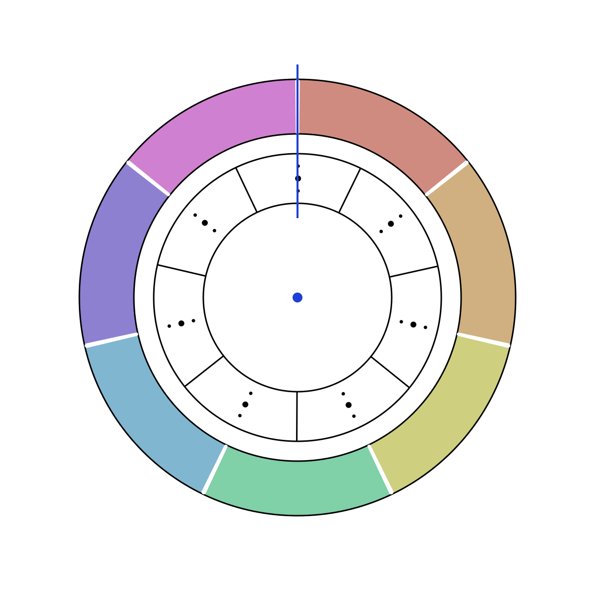
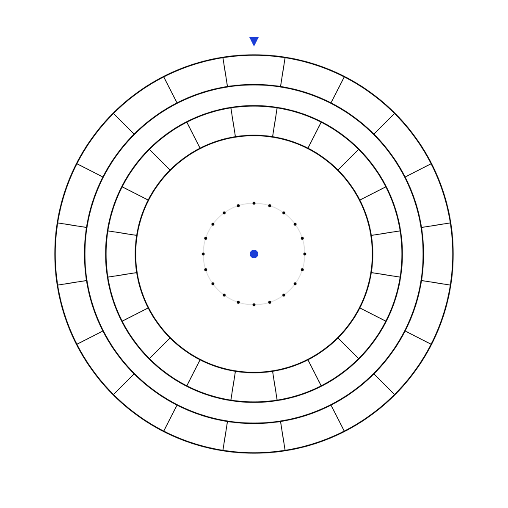
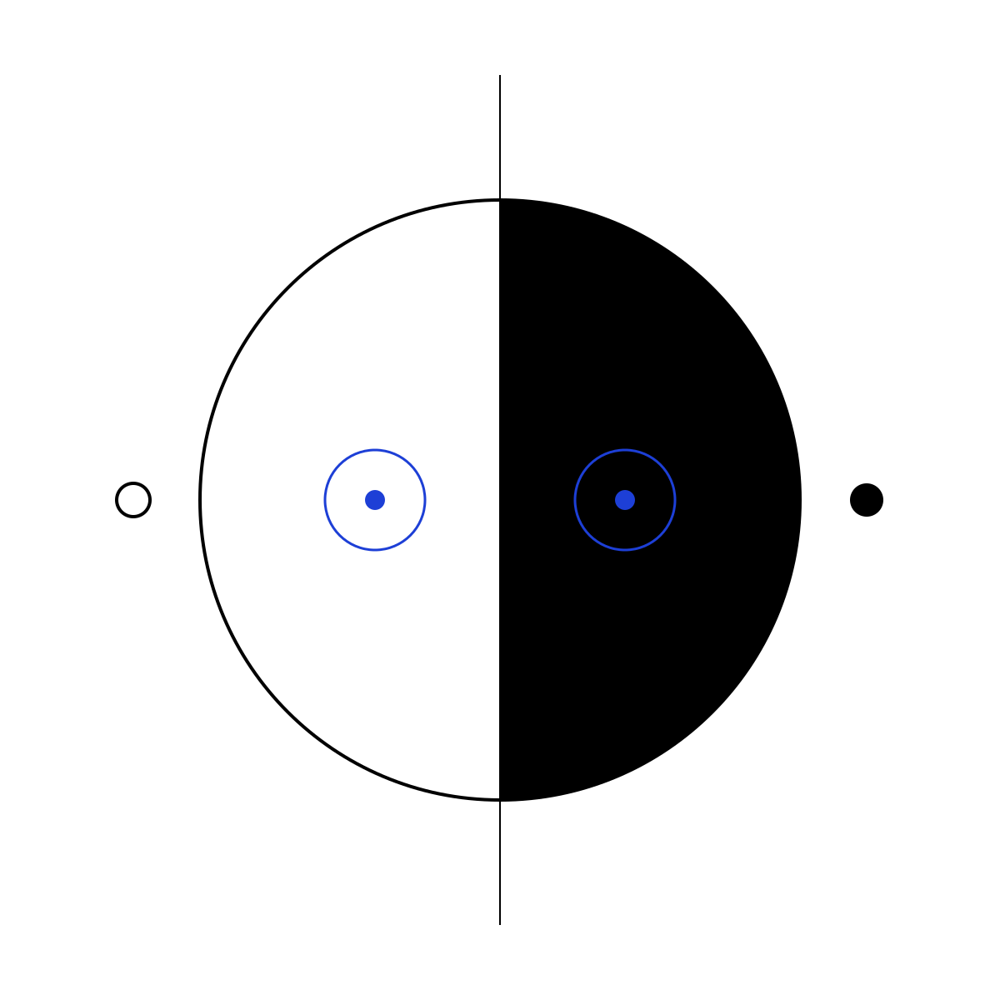
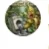

Christian StricklerFacebook, 17. Oktober 2026
Die Kunst benutzt unser Nervensystem und unseren Geist, um sich selbst zu verwirklichen. #GutenMorgen

Theorie, die man anfassen kann. Diese Seite ist das Beispiel: ein Zettelkasten zum Lesen, sieben Apps zum Spielen, vier Prüfraster zum Hinsehen.
In Zahlen
[4]
Diese Seite lädt nichts von aussen: keine Cookies, keine Werbung, keine Tracker.
Angebot
Vier Leistungen, made in Switzerland. Jede mit einer eigenen Seite: was dazugehört, was es kostet und wie ein Briefing aussieht.
Alle Leistungen →Websites und Apps: schnell, eigenständig, ohne Dienste von aussen.
Leistung und Briefing →vermittlung[02]Seminare, Workshops, Projekte mit Schulen und Teams; Beratung für Institutionen.
Leistung und Briefing →kuration[03]Ausstellungen denken, ordnen, hängen.
Leistung und Briefing →produkte[04]Werke, Prints, Editionen und Auftragsarbeiten, klassisch und digital.
Leistung und Briefing →Zettelkasten
49 Zettel zu Operation, Kunst, Gesellschaft und künstlicher Kommunikation, in sieben Zyklen.
Alle Zettel →Ein Zettel aus dem Zettelkasten, jedes Mal ein anderer. Fahre über das Feld oder tippe eine Zelle an.
Zettel 01Die Brücke
Nicht die Welt begründet den Anschluss – der Anschluss erfindet die Welt, die ihn im Nachhinein notwendig erscheinen lässt.

[480,480] · The FictoryFünf Wege
Prüfraster
Vier Instrumente zum genaueren Hinsehen. Mit Grundlagenpapier und Anwendungsprompt lassen sich Theorien, Texte und Körperereignisse befragen.
Alle Prüfraster →
Verräumlichung und Verzeitlichung als Achsen.
Raster öffnen
Wessen Körperereignis kommt wie weit?
Raster öffnen
Einheit, Operation, Vermittlung.
Raster öffnen
Ereignis, Kontext, Übergang, Gegenprobe, Systembezüge.
Raster öffnenSpielen
Sieben Apps, die im Browser laufen und auf dem Gerät rechnen. Ohne Anmeldung, ohne Netz, ohne dass ein Bild das Gerät verlässt.
Alle Apps →
Ein Bild zerfällt, ordnet sich neu und setzt sich wieder zusammen.
App[02]
Ein Foto wird ein Film: Fragmente, Verwandlung oder Relief-Flug.
App[03]
Sechs Effekte für Foto und Video, von Physarum über die Wellenwanne zur Montage.
App[04]
Aus Klang wird Bild.
App[05]
Zwei Farbräder, 180 Gestaltungsübungen.
App[06]
Eine Drehung, eine Begegnung, eine offene Frage.
App[07]
Zehn Minuten zu zweit. Zwei Sichtweisen. Ein neuer Gedanke.
In Vorbereitung
Originale und Prints in kleinen Auflagen, Arbeiten im Raum und Editionen – in Vorbereitung.
Beiträge aus dem Zettelkasten für Social Media.
Christian StricklerFacebook, 17. Oktober 2026
Die Kunst benutzt unser Nervensystem und unseren Geist, um sich selbst zu verwirklichen. #GutenMorgen

Klaus KusanowskyX, 17. Oktober 2026Wer die Stochastik der Geräteintelligenz ernst nimmt, will nicht wissen, ob das Ding denken kann, sondern wird bemerken, wie sich Kontexte ordnen lassen. Ordnungsfähigkeit ist die intelligente Leistung, nicht die Durchschlagskraft von Stimmigkeit.
Kein Rhythmus und keine Ankündigungen. Eine kurze Mail, wenn ein Raster, eine App oder ein Text so weit ist, dass man damit arbeiten kann.
Eintragen lassenÜber Christian Strickler
[0,544]Keine Cookies · keine Tracker